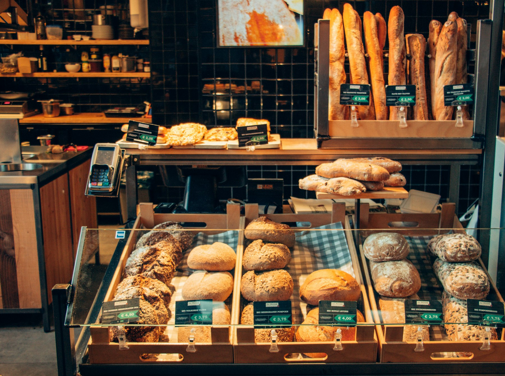

QR au comptoir
Un lien à vous, du type carnet.fr/leroy. Le client commande au téléphone. La vendeuse peut taper la même chose pour ceux qui passent sans scanner.

Commandes de fêtes · retrait boutique
Un QR au comptoir. Le client choisit. Vous avez les totaux pour le labo le matin. Pas de site. Pas d’appli. L’acompte, seulement si vous le voulez.
Démo cliquable · rien n’est débité


Ce n’est pas un click & collect, ni une caisse. C’est le cahier des commandes à date, en propre.
Un lien à vous, du type carnet.fr/leroy. Le client commande au téléphone. La vendeuse peut taper la même chose pour ceux qui passent sans scanner.
Le chef ouvre une page : totaux à produire, noms pour le comptoir. Il imprime, ou il garde le téléphone. Un récap la veille, si vous voulez.
On coche « récupéré ». Les no-shows restent visibles. L’acompte est optionnel : utile le 6 janvier, inutile pour Madame Durand tous les dimanches.
Là où il y a une commande à date, un retrait, et le risque d’en faire trop — ou pas assez.
Boulangers, pâtissiers, chocolatiers, salons de thé, traiteurs. Galettes, bûches, Pâques, pièces montées, plateaux.
Fleuristes, glaciers, rôtisseurs. Pas le plombier, pas le coiffeur : ce n’est pas un agenda de rendez-vous.
La saison d’abord. L’année, si les gâteaux d’anniversaire tournent aussi.
Le plus choisi
49 € / mois
3 mois. Bûches, galettes ou Pâques. C’est ce que la plupart signeront en premier.
39 € / mois
Si le carnet sert aussi hors fêtes. Ou 399 € réglés une fois.
149 € / pic
Une saison, sans abonnement. Pour tester sans s’engager.
Non. On héberge la page de commande. Vous avez un QR. Plus tard, si vous voulez un vrai site, on branche la même page dessus.
Non. Le client scanne, ça s’ouvre dans le téléphone. Vous, un favori pour le labo. C’est tout.
Non. On l’active quand ça pique (gros montant, week-end de pic). On le laisse fermé si vos habitués viennent toujours.
Non. Le catalogue, on le saisit avec vous à l’install. Un nouveau parfum ? Un message.
On branche ça chez un artisan, une saison. Si le chef imprime sa liste tout seul, on continue.